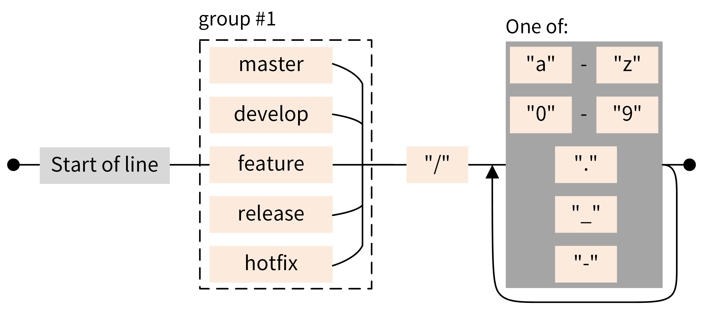
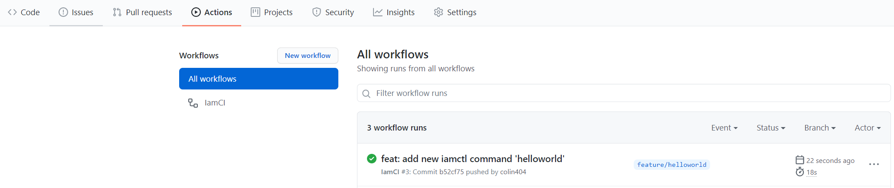
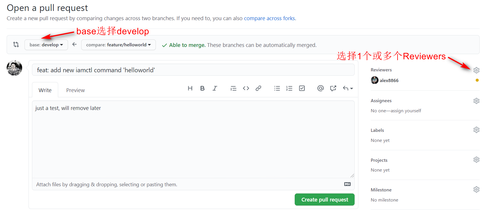
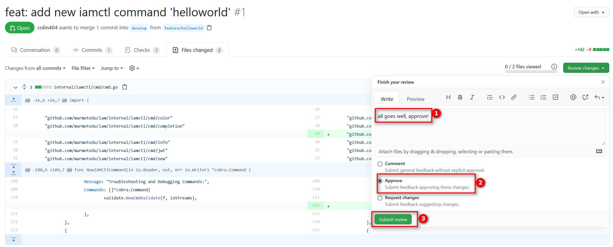
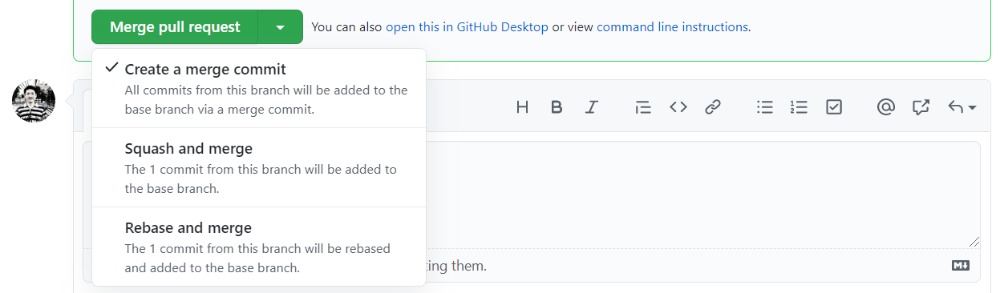
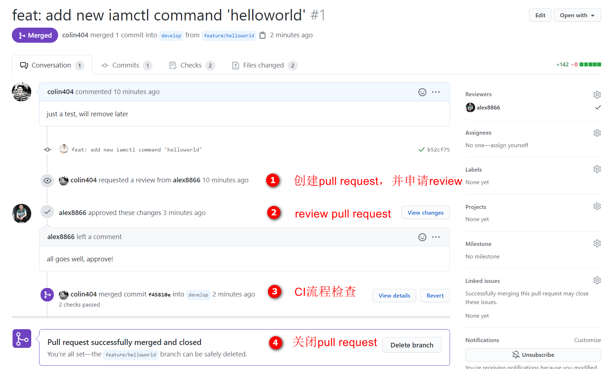

- 00 开篇词 从 0 开始搭建一个企业级 Go 应用.md
- 01 IAM系统概述：我们要实现什么样的 Go 项目？.md
- 02 环境准备：如何安装和配置一个基本的 Go 开发环境？.md
- 03 项目部署：如何快速部署 IAM 系统？.md
- 04 规范设计（上）：项目开发杂乱无章，如何规范？.md
- 05 规范设计（下）：commit 信息风格迥异、难以阅读，如何规范？.md
- 06 目录结构设计：如何组织一个可维护、可扩展的代码目录？.md
- 07 工作流设计：如何设计合理的多人开发模式？.md
- 08 研发流程设计（上）：如何设计 Go 项目的开发流程？.md
- 09 研发流程设计（下）：如何管理应用的生命周期？.md
- 10 设计方法：怎么写出优雅的 Go 项目？.md
- 11 设计模式：Go常用设计模式概述.md
- 12 API 风格（上）：如何设计RESTful API？.md
- 13 API 风格（下）：RPC API介绍.md
- 14 项目管理：如何编写高质量的Makefile？.md
- 15 研发流程实战：IAM项目是如何进行研发流程管理的？.md
- 16 代码检查：如何进行静态代码检查？.md
- 17 API 文档：如何生成 Swagger API 文档 ？.md
- 18 错误处理（上）：如何设计一套科学的错误码？.md
- 19 错误处理（下）：如何设计错误包？.md
- 20 日志处理（上）：如何设计日志包并记录日志？.md
- 21 日志处理（下）：手把手教你从 0 编写一个日志包.md
- 22 应用构建三剑客：Pflag、Viper、Cobra 核心功能介绍.md
- 23 应用构建实战：如何构建一个优秀的企业应用框架？.md
- 24 Web 服务：Web 服务核心功能有哪些，如何实现？.md
- 25 认证机制：应用程序如何进行访问认证？.md
- 26 IAM项目是如何设计和实现访问认证功能的？.md
- 27 权限模型：5大权限模型是如何进行资源授权的？.md
- 28 控制流（上）：通过iam-apiserver设计，看Web服务的构建.md
- 29 控制流（下）：iam-apiserver服务核心功能实现讲解.md
- 30 ORM：CURD 神器 GORM 包介绍及实战.md
- 31 数据流：通过iam-authz-server设计，看数据流服务的设计.md
- 32 数据处理：如何高效处理应用程序产生的数据？.md
- 33 SDK 设计（上）：如何设计出一个优秀的 Go SDK？.md
- 34 SDK 设计（下）：IAM项目Go SDK设计和实现.md
- 35 效率神器：如何设计和实现一个命令行客户端工具？.md
- 36 代码测试（上）：如何编写 Go 语言单元测试和性能测试用例？.md
- 37 代码测试（下）：Go 语言其他测试类型及 IAM 测试介绍.md
- 38 性能分析（上）：如何分析 Go 语言代码的性能？.md
- 39 性能分析（下）：API Server性能测试和调优实战.md
- 40 软件部署实战（上）：部署方案及负载均衡、高可用组件介绍.md
- 41 软件部署实战（中）：IAM 系统生产环境部署实战.md
- 42 软件部署实战（下）：IAM系统安全加固、水平扩缩容实战.md
- 43 技术演进（上）：虚拟化技术演进之路.md
- 44 技术演进（下）：软件架构和应用生命周期技术演进之路.md
- 45 基于Kubernetes的云原生架构设计.md
- 46 如何制作Docker镜像？.md
- 47 如何编写Kubernetes资源定义文件？.md
- 48 IAM 容器化部署实战.md
- 49 服务编排（上）：Helm服务编排基础知识.md
- 50 服务编排（下）：基于Helm的服务编排部署实战.md
- 51 基于 GitHub Actions 的 CI 实战.md
- 特别放送 Go Modules依赖包管理全讲.md
- 特别放送 Go Modules实战.md
- 特别放送 IAM排障指南.md
- 特别放送 分布式作业系统设计和实现.md
- 特别放送 给你一份Go项目中最常用的Makefile核心语法.md
- 特别放送 给你一份清晰、可直接套用的Go编码规范.md
- 直播加餐 如何从小白进阶成 Go 语言专家？.md
- 结束语 如何让自己的 Go 研发之路走得更远？.md
15 研发流程实战：IAM项目是如何进行研发流程管理的？
你好，我是孔令飞。
在 08讲 和 14讲 ，我分别介绍了如何设计研发流程，和如何基于 Makefile 高效地管理项目。那么今天，我们就以研发流程为主线，来看下IAM项目是如何通过Makefile来高效管理项目的。学完这一讲，你不仅能更加深刻地理解 08讲 和 14讲 所介绍的内容，还能得到很多可以直接用在实际操作中的经验、技巧。
研发流程有很多阶段，其中的开发阶段和测试阶段是需要开发者深度参与的。所以在这一讲中，我会重点介绍这两个阶段中的Makefile项目管理功能，并且穿插一些我的Makefile的设计思路。
为了向你演示流程，这里先假设一个场景。我们有一个需求：给IAM客户端工具iamctl增加一个helloworld命令，该命令向终端打印hello world。
接下来，我们就来看下如何具体去执行研发流程中的每一步。首先，我们进入开发阶段。
开发阶段
开发阶段是开发者的主战场，完全由开发者来主导，它又可分为代码开发和代码提交两个子阶段。我们先来看下代码开发阶段。
代码开发
拿到需求之后，首先需要开发代码。这时，我们就需要选择一个适合团队和项目的Git工作流。因为Git Flow工作流比较适合大型的非开源项目，所以这里我们选择Git Flow工作流。代码开发的具体步骤如下：
第一步，基于develop分支，新建一个功能分支 feature/helloworld。
$ git checkout -b feature/helloworld develop
这里需要注意：新建的branch名要符合Git Flow工作流中的分支命名规则。否则，在git commit阶段，会因为branch不规范导致commit失败。IAM项目的分支命令规则具体如下图所示：

IAM项目通过pre-commit githooks来确保分支名是符合规范的。在IAM项目根目录下执行git commit 命令，git会自动执行pre-commit脚本，该脚本会检查当前branch的名字是否符合规范。
这里还有一个地方需要你注意：git不会提交 .git/hooks 目录下的githooks脚本，所以我们需要通过以下手段，确保开发者clone仓库之后，仍然能安装我们指定的githooks脚本到 .git/hooks 目录：
# Copy githook scripts when execute makefile
COPY_GITHOOK:=$(shell cp -f githooks/* .git/hooks/)
上述代码放在scripts/make-rules/common.mk文件中，每次执行make命令时都会执行，可以确保githooks都安装到 .git/hooks 目录下。
第二步，在feature/helloworld分支中，完成helloworld命令的添加。
首先，通过 iamctl new helloworld 命令创建helloworld命令模板：
$ iamctl new helloworld -d internal/iamctl/cmd/helloworld
Command file generated: internal/iamctl/cmd/helloworld/helloworld.go
接着，编辑internal/iamctl/cmd/cmd.go文件，在源码文件中添加helloworld.NewCmdHelloworld(f, ioStreams),，加载helloworld命令。这里将helloworld命令设置为Troubleshooting and Debugging Commands命令分组：
import (
"github.com/marmotedu/iam/internal/iamctl/cmd/helloworld"
)
...
{
Message: "Troubleshooting and Debugging Commands:",
Commands: []*cobra.Command{
validate.NewCmdValidate(f, ioStreams),
helloworld.NewCmdHelloworld(f, ioStreams),
},
},
这些操作中包含了low code的思想。在第 10讲 中我就强调过，要尽可能使用代码自动生成这一技术。这样做有两个好处：一方面能够提高我们的代码开发效率；另一方面也能够保证规范，减少手动操作可能带来的错误。所以这里，我将iamctl的命令也模板化，并通过 iamctl new 自动生成。
第三步，生成代码。
$ make gen
如果改动不涉及代码生成，可以不执行make gen操作。 make gen 执行的其实是gen.run伪目标：
gen.run: gen.clean gen.errcode gen.docgo.doc
可以看到，当执行 make gen.run 时，其实会先清理之前生成的文件，再分别自动生成error code和doc.go文件。
这里需要注意，通过make gen 生成的存量代码要具有幂等性。只有这样，才能确保每次生成的代码是一样的，避免不一致带来的问题。
我们可以将更多的与自动生成代码相关的功能放在 gen.mk Makefile 中。例如：
- gen.docgo.doc，代表自动生成doc.go文件。
- gen.ca.%，代表自动生成iamctl、iam-apiserver、iam-authz-server证书文件。
第四步，版权检查。
如果有新文件添加，我们还需要执行 make verify-copyright ，来检查新文件有没有添加版权头信息。
$ make verify-copyright
如果版权检查失败，可以执行make add-copyright自动添加版权头。添加版权信息只针对开源软件，如果你的软件不需要添加，就可以略过这一步。
这里还有个Makefile编写技巧：如果Makefile的command需要某个命令，就可以使该目标依赖类似tools.verify.addlicense这种目标，tools.verify.addlicense会检查该工具是否已安装，如果没有就先安装。
.PHONY: copyright.verify
copyright.verify: tools.verify.addlicense
...
tools.verify.%:
@if ! which $* &>/dev/null; then $(MAKE) tools.install.$*; fi
.PHONY: install.addlicense
install.addlicense:
@$(GO) get -u github.com/marmotedu/addlicense
通过这种方式，可以使 make copyright.verify 尽可能自动化，减少手动介入的概率。
第五步，代码格式化。
$ make format
执行make format会依次执行以下格式化操作：
- 调用gofmt格式化你的代码。
- 调用goimports工具，自动增删依赖的包，并将依赖包按字母序排序并分类。
- 调用golines工具，把超过120行的代码按golines规则，格式化成<120行的代码。
- 调用
go mod edit -fmt格式化go.mod文件。
第六步，静态代码检查。
$ make lint
关于静态代码检查，在这里你可以先了解代码开发阶段有这个步骤，至于如何操作，我会在下一讲给你详细介绍。
第七步，单元测试。
$ make test
这里要注意，并不是所有的包都需要执行单元测试。你可以通过如下命令，排除掉不需要单元测试的包：
go test `go list ./...|egrep -v $(subst $(SPACE),'|',$(sort $(EXCLUDE_TESTS)))`
在go.test的command中，我们还运行了以下命令：
sed -i '/mock_.*.go/d' $(OUTPUT_DIR)/coverage.out
运行该命令的目的，是把mock_.* .go文件中的函数单元测试信息从coverage.out中删除。mock_.*.go文件中的函数是不需要单元测试的，如果不删除，就会影响后面的单元测试覆盖率的计算。
如果想检查单元测试覆盖率，请执行：
$ make cover
默认测试覆盖率至少为60%，也可以在命令行指定覆盖率阈值为其他值，例如：
$ make cover COVERAGE=90
如果测试覆盖率不满足要求，就会返回以下错误信息：
test coverage is 62.1%
test coverage does not meet expectations: 90%, please add test cases!
make[1]: *** [go.test.cover] Error 1
make: *** [cover] Error 2
这里make命令的退出码为1。
如果单元测试覆盖率达不到设置的阈值，就需要补充测试用例，否则禁止合并到develop和master分支。IAM项目配置了GitHub Actions CI自动化流水线，CI流水线会自动运行，检查单元测试覆盖率是否达到要求。
第八步，构建。
最后，我们执行make build命令，构建出cmd/目录下所有的二进制安装文件。
$ make build
make build 会自动构建 cmd/ 目录下的所有组件，如果只想构建其中的一个或多个组件，可以传入 BINS选项，组件之间用空格隔开，并用双引号引起来：
$ make build BINS="iam-apiserver iamctl"
到这里，我们就完成了代码开发阶段的全部操作。
如果你觉得手动执行的make命令比较多，可以直接执行make命令：
$ make
===========> Generating iam error code go source files
===========> Generating error code markdown documentation
===========> Generating missing doc.go for go packages
===========> Verifying the boilerplate headers for all files
===========> Formating codes
===========> Run golangci to lint source codes
===========> Run unit test
...
===========> Building binary iam-pump v0.7.2-24-g5814e7b for linux amd64
===========> Building binary iamctl v0.7.2-24-g5814e7b for linux amd64
...
直接执行make会执行伪目标all所依赖的伪目标 all: tidy gen add-copyright format lint cover build，也即执行以下操作：依赖包添加/删除、生成代码、自动添加版权头、代码格式化、静态代码检查、覆盖率测试、构建。
这里你需要注意一点：all中依赖cover，cover实际执行的是 go.test.cover ，而 go.test.cover 又依赖 go.test ，所以cover实际上是先执行单元测试，再检查单元测试覆盖率是否满足预设的阈值。
最后补充一点，在开发阶段我们可以根据需要随时执行 make gen 、 make format 、 make lint 、 make cover 等操作，为的是能够提前发现问题并改正。
代码提交
代码开发完成之后，我们就需要将代码提交到远程仓库，整个流程分为以下几个步骤。
第一步，开发完后，将代码提交到feature/helloworld分支，并push到远端仓库。
$ git add internal/iamctl/cmd/helloworld internal/iamctl/cmd/cmd.go
$ git commit -m "feat: add new iamctl command 'helloworld'"
$ git push origin feature/helloworld
这里我建议你只添加跟feature/helloworld相关的改动，这样就知道一个commit做了哪些变更，方便以后追溯。所以，我不建议直接执行git add .这类方式提交改动。
在提交commit时，commit-msg githooks会检查commit message是否符合Angular Commit Message规范，如果不符合会报错。commit-msage调用了go-gitlint来检查commit message。go-gitlint会读取 .gitlint 中配置的commit message格式：
--subject-regex=^((Merge branch.*of.*)|((revert: )?(feat|fix|perf|style|refactor|test|ci|docs|chore)(\(.+\))?: [^A-Z].*[^.]$))
--subject-maxlen=72
--body-regex=^([^\r\n]{0,72}(\r?\n|$))*$
IAM项目配置了GitHub Actions，当有代码被push后，会触发CI流水线，流水线会执行make all目标。GitHub Actions CI流程执行记录如下图：

如果CI不通过，就需要修改代码，直到CI流水线通过为止。
这里，我们来看下GitHub Actions的配置：
name: IamCI
on:
push:
branchs:
- '*'
pull_request:
types: [opened, reopened]
jobs:
build:
runs-on: ubuntu-latest
steps:
- uses: actions/checkout@v2
- name: Set up Go
uses: actions/setup-go@v2
with:
go-version: 1.16
- name: all
run: make
可以看到，GitHub Actions实际上执行了3步：拉取代码、设置Go编译环境、执行make命令（也就是执行 make all 目标）。
GitHub Actions也执行了 make all 目标，和手动操作执行的 make all 目标保持一致，这样做是为了让线上的CI流程和本地的CI流程完全保持一致。这样，当我们在本地执行make命令通过后，在线上也会通过。保持一个一致的执行流程和执行结果很重要。否则，本地执行make通过，但是线上却不通过，岂不很让人头疼？
第二步，提交pull request。
登陆GitHub，基于feature/helloworld创建pull request，并指定Reviewers进行code review。具体操作如下图：

当有新的pull request被创建后，也会触发CI流水线。
第三步，创建完pull request后，就可以通知reviewers 来 review代码，GitHub也会发站内信。
第四步，Reviewers 对代码进行review。
Reviewer通过review github diff后的内容，并结合CI流程是否通过添加评论，并选择Comment（仅评论）、Approve（通过）、Request Changes（不通过，需要修改），如下图所示：

如果review不通过，feature开发者可以直接在feature/helloworld分支修正代码，并push到远端的feature/helloworld分支，然后通知reviewers再次review。因为有push事件发生，所以会触发GitHub Actions CI流水线。
第五步，code review通过后，maintainer就可以将新的代码合并到develop分支。
使用Create a merge commit的方式，将pull request合并到develop分支，如下图所示：

Create a merge commit的实际操作是 git merge --no-ff，feature/helloworld分支上所有的 commit 都会加到 develop 分支上，并且会生成一个 merge commit。使用这种方式，可以清晰地知道是谁做了哪些提交，回溯历史的时候也会更加方便。
第六步，合并到develop分支后，触发CI流程。
到这里，开发阶段的操作就全部完成了，整体流程如下：

合并到develop分支之后，我们就可以进入开发阶段的下一阶段，也就是测试阶段了。
测试阶段
在测试阶段，开发人员主要负责提供测试包和修复测试期间发现的bug，这个过程中也可能会发现一些新的需求或变动点，所以需要合理评估这些新的需求或变动点是否要放在当前迭代修改。
测试阶段的操作流程如下。
第一步，基于develop分支，创建release分支，测试代码。
$ git checkout -b release/1.0.0 develop
$ make
第二步，提交测试。
将release/1.0.0分支的代码提交给测试同学进行测试。这里假设一个测试失败的场景：我们要求打印“hello world”，但打印的是“Hello World”，需要修复。那具体应该怎么操作呢？
你可以直接在release/1.0.0分支修改代码，修改完成后，本地构建并提交代码：
$ make
$ git add internal/iamctl/cmd/helloworld/
$ git commit -m "fix: fix helloworld print bug"
$ git push origin release/1.0.0
push到release/1.0.0后，GitHub Actions会执行CI流水线。如果流水线执行成功，就将代码提供给测试；如果测试不成功，再重新修改，直到流水线执行成功。
测试同学会对release/1.0.0分支的代码进行充分的测试，例如功能测试、性能测试、集成测试、系统测试等。
第三步，测试通过后，将功能分支合并到master分支和develop分支。
$ git checkout develop
$ git merge --no-ff release/1.0.0
$ git checkout master
$ git merge --no-ff release/1.0.0
$ git tag -a v1.0.0 -m "add print hello world" # master分支打tag
到这里，测试阶段的操作就基本完成了。测试阶段的产物是master/develop分支的代码。
第四步，删除feature/helloworld分支，也可以选择性删除release/1.0.0分支。
我们的代码都合并入master/develop分支后，feature开发者可以选择是否要保留feature。不过，如果没有特别的原因，我建议删掉，因为feature分支太多的话，不仅看起来很乱，还会影响性能，删除操作如下：
$ git branch -d feature/helloworld
IAM项目的Makefile项目管理技巧
在上面的内容中，我们以研发流程为主线，亲身体验了IAM项目的Makefile项目管理功能。这些是你最应该掌握的核心功能，但IAM项目的Makefile还有很多功能和设计技巧。接下来，我会给你分享一些很有价值的Makefile项目管理技巧。
help自动解析
因为随着项目的扩展，Makefile大概率会不断加入新的管理功能，这些管理功能也需要加入到 make help 输出中。但如果每添加一个目标，都要修改 make help 命令，就比较麻烦，还容易出错。所以这里，我通过自动解析的方式，来生成make help输出：
## help: Show this help info.
.PHONY: help
help: Makefile
@echo -e "\nUsage: make <TARGETS> <OPTIONS> ...\n\nTargets:"
@sed -n 's/^##//p' $< | column -t -s ':' | sed -e 's/^/ /'
@echo "$$USAGE_OPTIONS"
目标help的命令中，通过 sed -n 's/^##//p' $< | column -t -s ':' | sed -e 's/^/ /' 命令，自动解析Makefile中 ## 开头的注释行，从而自动生成 make help 输出。
Options中指定变量值
通过以下赋值方式，变量可以在Makefile options中被指定：
ifeq ($(origin COVERAGE),undefined)
COVERAGE := 60
endif
例如，如果我们执行make ，则COVERAGE设置为默认值60；如果我们执行make COVERAGE=90 ，则COVERAGE值为90。通过这种方式，我们可以更灵活地控制Makefile的行为。
自动生成CHANGELOG
一个项目最好有CHANGELOG用来展示每个版本之间的变更内容，作为Release Note的一部分。但是，如果每次都要手动编写CHANGELOG，会很麻烦，也不容易坚持，所以这里我们可以借助git-chglog工具来自动生成。
IAM项目的git-chglog工具的配置文件放在.chglog目录下，在学习git-chglog工具时，你可以参考下。
自动生成版本号
一个项目也需要有一个版本号，当前用得比较多的是语义化版本号规范。但如果靠开发者手动打版本号，工作效率低不说，经常还会出现漏打、打的版本号不规范等问题。所以最好的办法是，版本号也通过工具自动生成。在IAM项目中，采用了gsemver工具来自动生成版本号。
整个IAM项目的版本号，都是通过scripts/ensure_tag.sh脚本来生成的：
version=v`gsemver bump`
if [ -z "`git tag -l $version`" ];then
git tag -a -m "release version $version" $version
fi
在scripts/ensure_tag.sh脚本中，通过 gsemver bump 命令来自动化生成语义化的版本号，并执行 git tag -a 给仓库打上版本号标签，gsemver 命令会根据Commit Message自动生成版本号。
之后，Makefile和Shell脚本用到的所有版本号均统一使用scripts/make-rules/common.mk文件中的VERSION变量：
VERSION := $(shell git describe --tags --always --match='v*')
上述的Shell命令通过 git describe 来获取离当前提交最近的tag（版本号）。
在执行 git describe 时，如果符合条件的tag指向最新提交，则只显示tag的名字，否则会有相关的后缀，来描述该tag之后有多少次提交，以及最新的提交commit id。例如：
$ git describe --tags --always --match='v*'
v1.0.0-3-g1909e47
这里解释下版本号中各字符的含义：
- 3：表示自打tag v1.0.0以来有3次提交。
- g1909e47：g 为git的缩写，在多种管理工具并存的环境中很有用处。
- 1909e47：7位字符表示为最新提交的commit id 前7位。
最后解释下参数：
- –tags，使用所有的标签，而不是只使用带注释的标签（annotated tag）。
git tag <tagname>生成一个 unannotated tag，git tag -a <tagname> -m '<message>'生成一个 annotated tag。 - –always，如果仓库没有可用的标签，那么使用commit缩写来替代标签。
- –match ，只考虑与给定模式相匹配的标签。
保持行为一致
上面我们介绍了一些管理功能，例如检查Commit Message是否符合规范、自动生成CHANGELOG、自动生成版本号。这些可以通过Makefile来操作，我们也可以手动执行。例如，通过以下命令，检查IAM的所有Commit是否符合Angular Commit Message规范：
$ go-gitlint
b62db1f: subject does not match regex [^(revert: )?(feat|fix|perf|style|refactor|test|ci|docs|chore)(\(.+\))?: [^A-Z].*[^.]$]
也可以通过以下命令，手动来生成CHANGELOG：
$ git-chglog v1.0.0 CHANGELOG/CHANGELOG-1.0.0.md.html
还可以执行gsemver来生成版本号：
$ gsemver bump
1.0.1
这里要强调的是，我们要保证不管使用手动操作，还是通过Makefile操作，都要确保git commit message规范检查结果、生成的CHANGELOG、生成的版本号是一致的。这需要我们采用同一种操作方式。
总结
在整个研发流程中，需要开发人员深度参与的阶段有两个，分别是开发阶段和测试阶段。在开发阶段，开发者完成代码开发之后，通常需要执行生成代码、版权检查、代码格式化、静态代码检查、单元测试、构建等操作。我们可以将这些操作集成在Makefile中，来提高效率，并借此统一操作。
另外，IAM项目在编写Makefile时也采用了一些技巧，例如make help 命令中，help信息是通过解析Makefile文件的注释来完成的；可以通过git-chglog自动生成CHANGELOG；通过gsemver自动生成语义化的版本号等。
课后练习
- 看下IAM项目的
make dependencies是如何实现的，这样实现有什么好处？ - IAM项目中使用 了
gofmt、goimports、golines3种格式化工具，思考下，还有没有其他格式化工具值得集成在make format目标的命令中？
欢迎你在留言区分享你的见解，和我一起交流讨论，我们下一讲见！
© 2019 - 2023 Liangliang Lee. Powered by gin and hexo-theme-book.